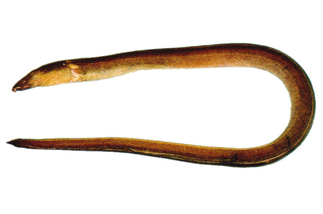

×
Pisodonophis cancrivorus (Richardson, 1848)
Longfin Snake-Eel
Anguilliformes
Ophichthidae
Least Concern
Teeth molariform, multiserial on jaws, intermaxillary and vomer; dorsal fin with broad dark edge Dorsal fin beginning above pectoral fin. Body snake-like, cylindrical, compressed only along extreme tail tip; anterior nostril tubular, posterior nostril along lower edge of lip;. Variable from grey to black or brown. Large individuals have wrinkled skin.
Marine; freshwater; brackish; reef-associated; anadromous ; depth range 1 - 20 m. Tropical. Occurs in lagoons and estuaries, entering freshwater. Often in tidal channels where loose groups congregate, and usually seen with just the head exposed.
Not Available
Indo-Pacific: Red Sea and East Africa to French Polynesia, north to the Ogasawara Islands, south to Australia.